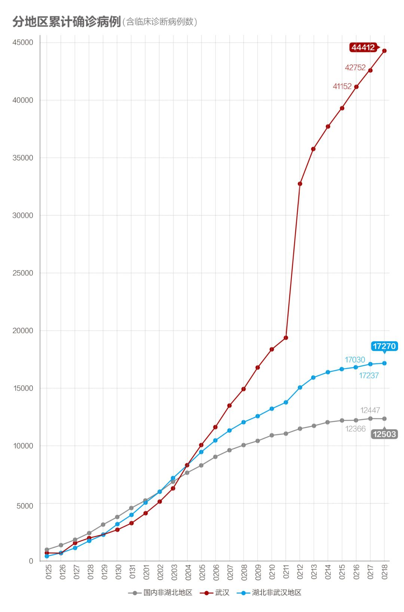
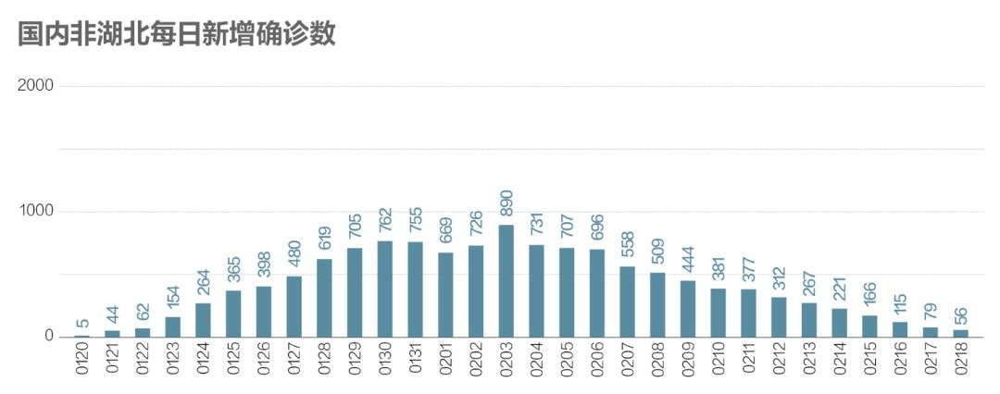
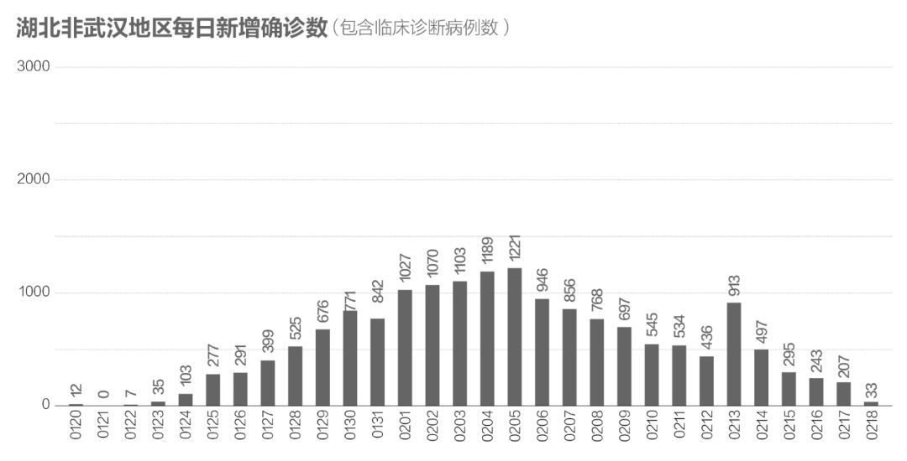
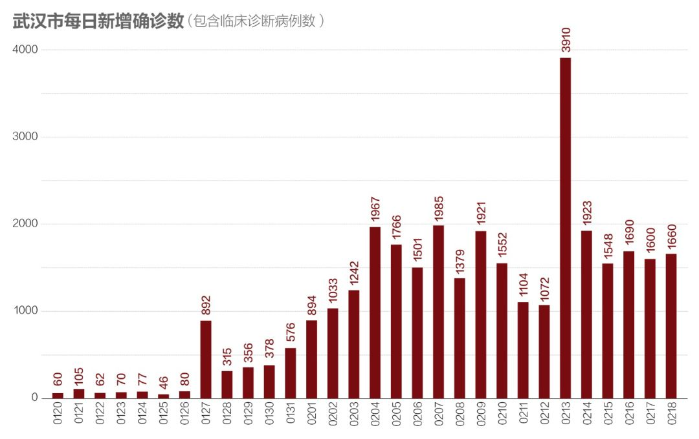
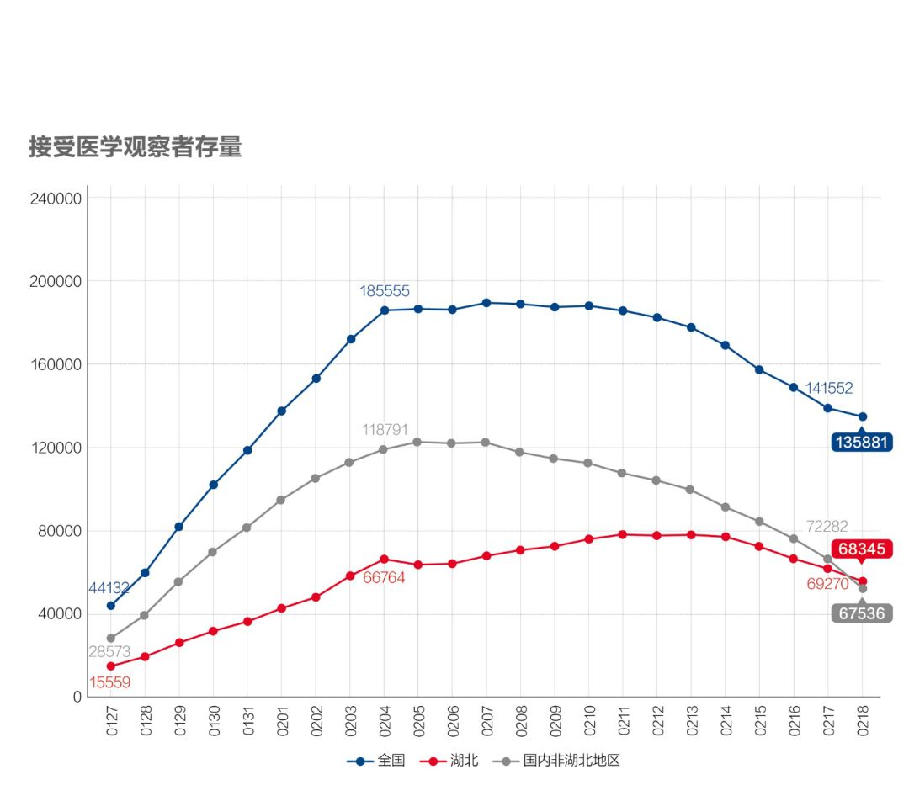
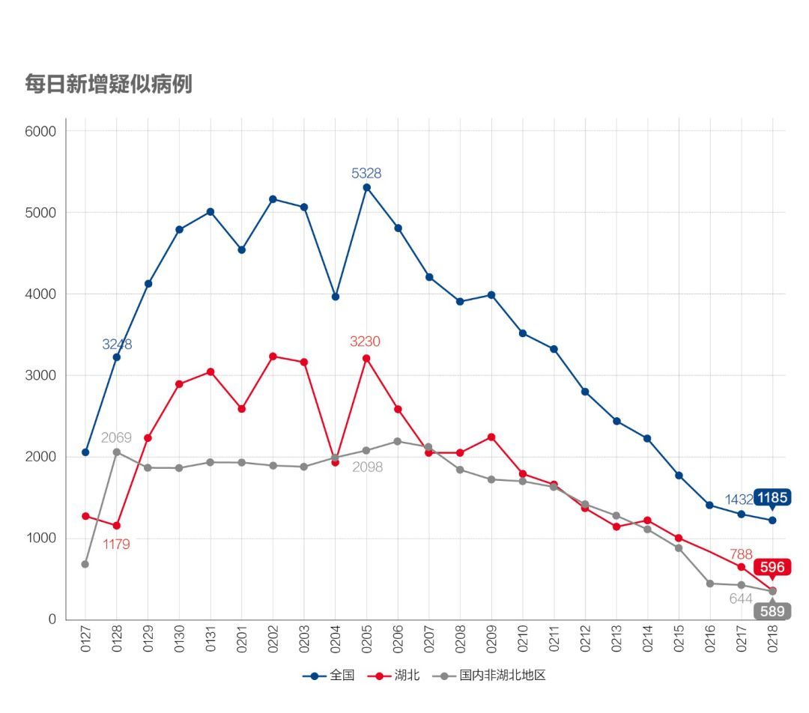

数说疫情0218：湖北孝感要求彻底阻隔到位，武汉仍待观察
原文链接 备份链接 今天起我们将不再提“归零”，以期警钟长鸣 2020年1月17日，医护人员将患者送至武汉金银潭医院。摄影/无畏 文 |《财经》数据研究员 徐进 图 |《财经》视觉中心 编辑 | 谢丽容 一、 …

全国武汉以外地区全面向好，期待武汉落实五个“百分之百”终获成功！
文 |《财经》数据研究员 徐进
图 |《财经》视觉中心
编辑 | 谢丽容
一、 累计确诊病例
截至2月18日24:00，全国累计报告确诊新冠肺炎病例74185例。以下为分区趋势图。

图1
国内非湖北地区趋势线已现平顶，以此类推，最终累计病例大概率不会超过12700例。湖北非武汉地区继续趋缓。武汉趋势未稳。
二、 新增病例：国内非湖北地区稳步趋近零增长，湖北非武汉地区继续趋好，武汉仍待扭转

图2
国内非湖北新增病例今天降至56例，平均每省不到2例。趋近零增长。2月18日，湖北以外所有省区当日新增病例都已降到个位数水平，其中12个省市区为零增长。

图3
湖北非武汉地区新增首次下降至两位数。须注意18日有53例核减病例，实际新增约在86例，但即便如此也是大幅下降，非常好的结果！

图4
武汉新增仍在1600例以上。武汉落实五个“百分之百”，希望尽快100%做到“确诊患者应收尽收、疑似患者核酸检测、发热病人隔离、密切接触者隔离、小区村庄封闭管理”。此役成功定将扭转战局，期待能在近日完成。
三、 确诊病例增长率：全国武汉以外地区已降至0.5%以下，武汉仍在较高水平

图5
国内非湖北地区增长率降至0.5%以下，湖北非武汉地区的病例增速降至0.19%，剔除核减因素为0.5%，也值得点赞！武汉仍在较高水平。
四、 密切接触者追踪：国内非湖北地区追踪力度持续加大，湖北有所上升，值得期待

图6
国内非湖北地区该项指标持续提升，平均每个确诊病例追踪到的密切接触者从10天前的24人上升到29人，且还在上升，显示彻底阻隔传染的强大能力和决心。由于这一数据既反映了输入地的“严阵以待”，也反映了输出地的层层筛查，由此我们对复工期间防止疫情反复充满信心！湖北这个指标连日微弱爬升，考虑到武汉“五个百分之百”战役（其中包括密切追踪者百分之百隔离）尚未收尾，这种变化实在来之不易！

图7
湖北尚在接受医学观察者存量数据继续下降，有疫情趋缓因素，可能也有追踪力度不够的因素。国内非湖北地区继续明显下降。意味着可以释放更多资源投入到密切接触者追踪上（如果需要的话）。
五、 疑似病例：新增减少、存量下降

图8
湖北（含武汉）新增疑似病例连续4天下降，已远远小于湖北每日新增病例，如武汉数据已统计在内，那将是非常鼓舞人的前奏。

图9
疑似病例存量也都在下降。
六、 在院治疗人数：武汉收治能力提升

图10
湖北在院治疗人数仍有较大上升。鉴于湖北非武汉地区新增出院人数已于4天前开始大于新增病例，可推定该数据变化主要体现武汉收治能力的提高。另一方面也请注意我们推测的“湖北确诊未入院”人数连日来不断下降，18日更一举下降1200多例。这也应是武汉推进“五个百分百”的结果，是局面向好的标志。
七、 病死率有回升，但治愈率以快速度增长

图11
病死率继续回升，这里有病死发生时间与新确诊增加不同步的因素，也有救治能力和医疗资源因素。武汉病死率仍明显高于湖北和全国。

图12
治愈率以更快速度上升，这正是我们所期盼的。
小结：全国非湖北地区当日新增病例全面趋零。湖北非武汉地区持续向好。期待武汉落实五个“百分之百”终获成功！
● 数说疫情
数说疫情0216：湖北化解堰塞湖战局扭转，非湖北地区新增病例5日内清零
数说疫情0215：非湖北地区新增病例5日后有望清零，湖北进入总攻阶段
数说疫情0212：武汉形势扭转，湖北夺回主动权，全国继续向好

▲点击图片查看更多疫情报道
责编 | 黄端 duanhuang@caijing.com.cn
本文为《财经》杂志原创文章，未经授权不得转载或建立镜像。如需转载，请在文末留言申请并获取授权。
原文链接 备份链接 今天起我们将不再提“归零”，以期警钟长鸣 2020年1月17日，医护人员将患者送至武汉金银潭医院。摄影/无畏 文 |《财经》数据研究员 徐进 图 |《财经》视觉中心 编辑 | 谢丽容 一、 …
原文链接 备份链接 文 |《财经》数据研究员 徐进 图 |《财经》视觉中心 编辑 | 谢丽容 1. 今日概况： 根据国家卫健委数据，2月11日0—24时，31个省（自治区、直辖市）和新疆生产建设兵团报告，新增确诊病例2015例（湖 …
原文链接 备份链接 我们为什么预测本月20日前每日新增病例归零？五个依据 2020年2月6日，武汉市蔡甸区人民医院的隔离病房。摄影/陈卓 文 |《财经》数据研究员 徐进 图 |《财经》视觉中心 编辑 | 谢丽容 截至2月16 …
原文链接 备份链接 文 | 《财经》数据研究员 徐进 图 |《财经》视觉中心 编辑 | 谢丽容 1. 全国累计确诊病例趋势 截至2月15日24:00，全国累计报告确诊新冠肺炎病例68500人。以下分地区情况。 图1 有朋友提醒小编：你不 …
原文链接 备份链接 文 |《财经》数据研究员 徐进 图 |《财经》视觉中心 编辑 | 谢丽容 1. 全国累计新增确诊病例 图1 由图可见，国内非湖北地区正趋于平缓。 2. 新增病例：国内非湖北地区继续坚定下降，有望近日归零 图2 国内 …